import pandas as pd
import numpy as np
import scipy.stats as stats # for calculating quantiles for a QQ plot
import requests
# Print all columns from the Pandas DataFrame
pd.set_option('display.max_columns', None)
# Ignore warnings from Seaborn (future update warnings)
import warnings
warnings.filterwarnings("ignore")PPOL 5203 - Data Science I: Foundations
Week 8: Data visualization in Python
Professor: Rebecca Johnson
Plans for Today
Data visualization: theory (grammar of graphics, aesthetics)
Data visualization: practice with
plotnineData visualization: native Python libraries (
matplotlib,seaborn)Data types and a directory of common visualizations
In-class practice
Why data visualization?
Visualization matters! A figure is almost always more compelling than a table or a crosstab
This course covers the basics; you’ll have a full semester of Data Visualization later in the program
Focus of today:
- Grammar of graphics and
plotnine(aggplot2implementation in Python) - A brief tour of the native Python libraries
matplotlibandseaborn
- Grammar of graphics and
Data visualization in theory
Quiz: what do you see?
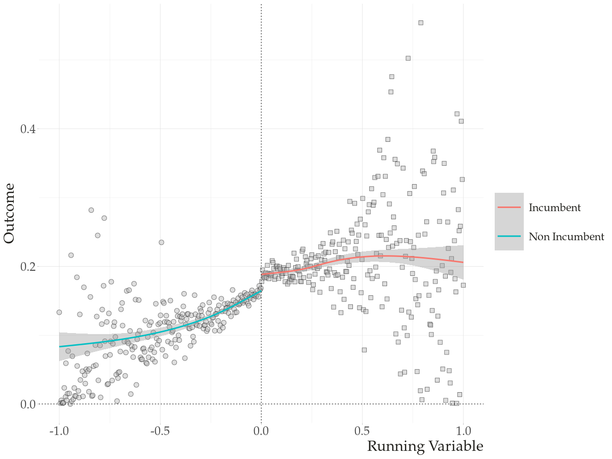
- How many variables (data) are mapped in this graph?
- How are these variables (non-constant) represented in the figure?
- What are the non-data (constant) related elements presented in the graph?
Aesthetics
All data visualizations map data values into quantifiable features of the resulting graphic. We refer to these features as aesthetics.
— Fundamentals of Data Visualization, Claus Wilke
Aesthetics: visual mappings that connect data variables to visual attributes of graphical elements

Cartesian coordinates system: 2d
Humans can very easily understand information in two dimensions; most of our work will consist of mapping data onto an X and a Y axis
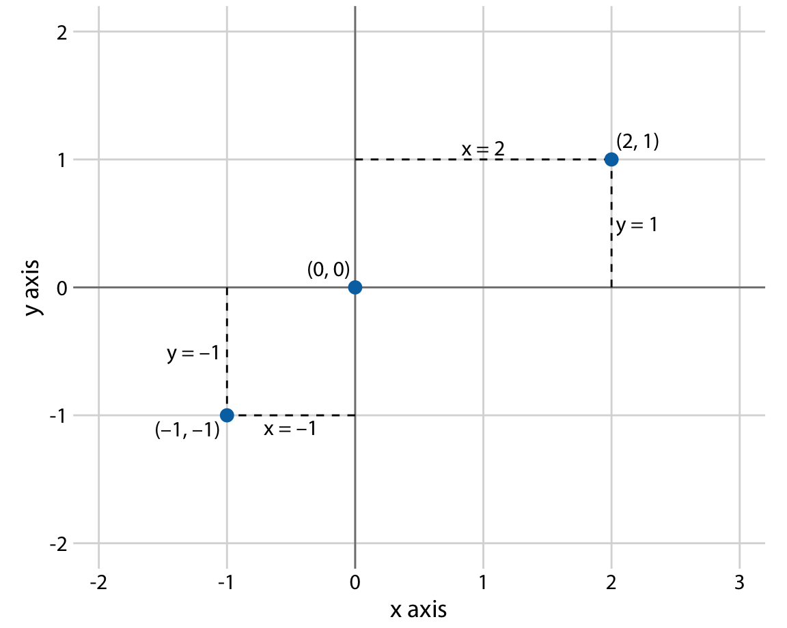
Adding a 3rd, 4th, 5th variable in a 2d space
We often want to map more variables into the graph. For example, we might want to:
- Distinguish discrete items or groups that don’t have an intrinsic order
- Highlight values that pass a certain threshold
- Represent a sequential/continuous data value
To add these to a 2d graph, we map them to new aesthetics (color, shape, size, alpha…)
Basic 2d plot
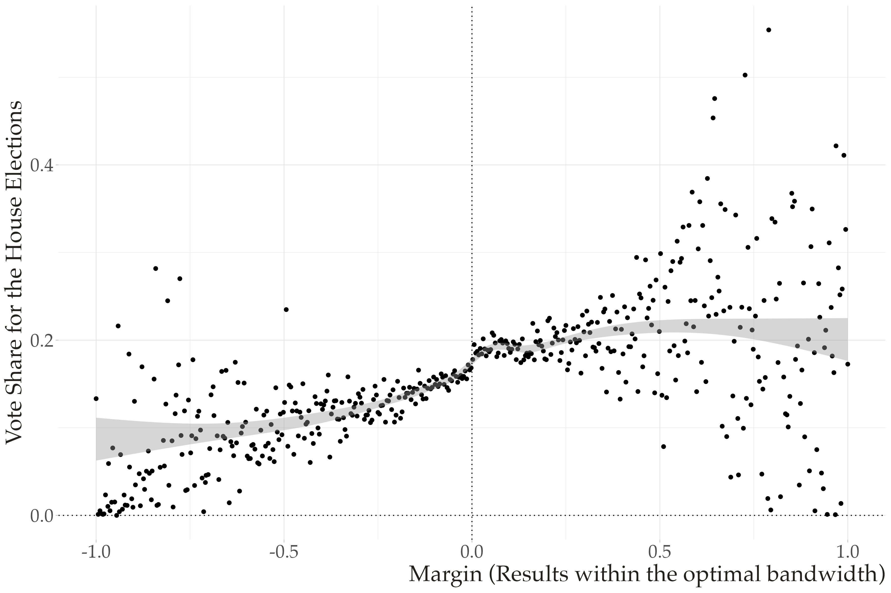
Color aesthetics to distinguish
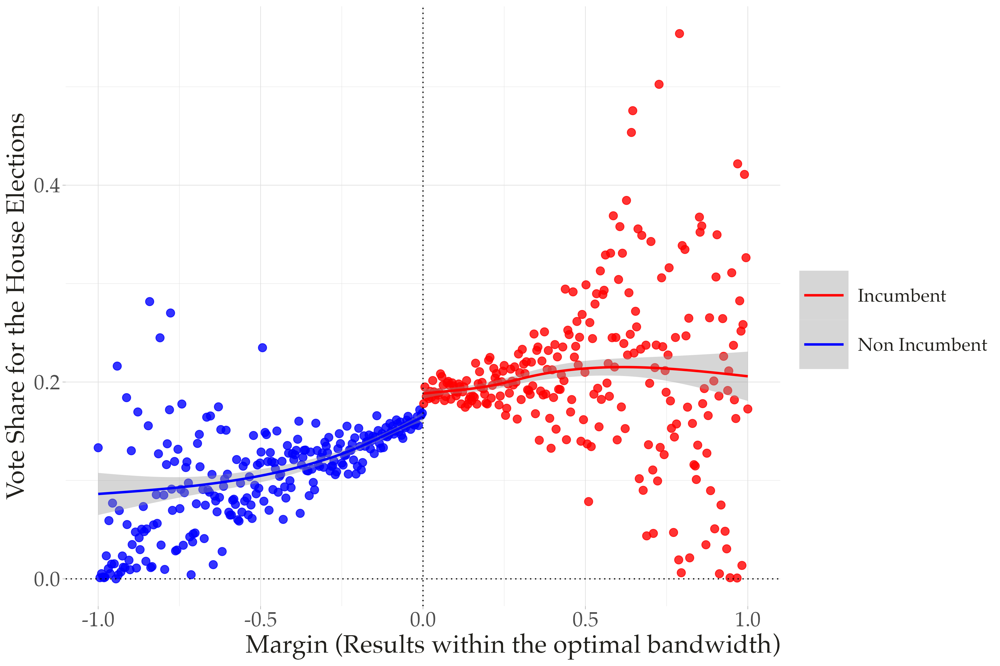
Color aesthetics to highlight
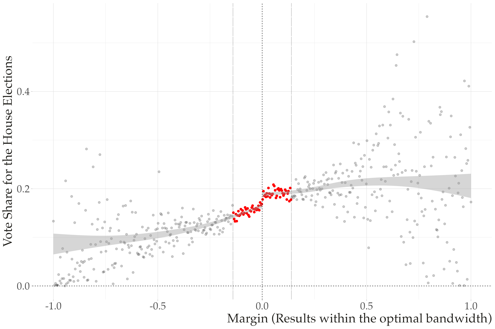
Color to represent a sequence of data points
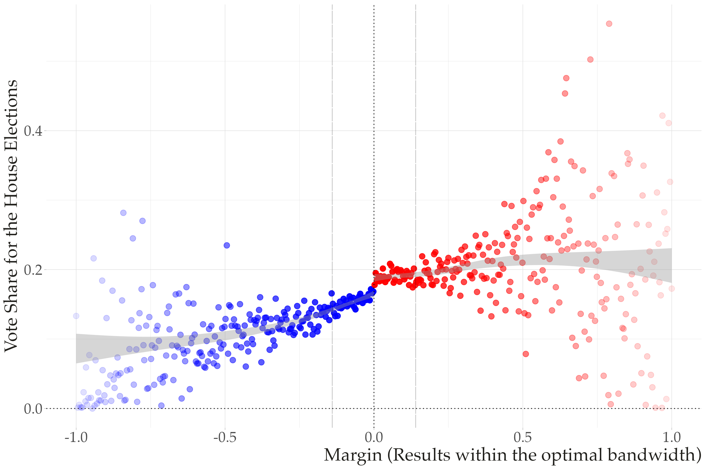
Grammar of graphics
Grammar: the set of structural rules that dictate how words in a language can be combined to form meaningful sentences
Grammar of graphics: brings a similar effort to establish structural rules for data visualizations — first developed in Leland Wilkinson’s book The Grammar of Graphics
Implementation:
ggplot2in R (developed by Hadley Wickham)plotninein Python — an emulator ofggplot2
Native Python libraries (matplotlib, seaborn) don’t use this framework, but we’ll focus on plotnine because it enforces a systematic, structured approach to building a wide variety of visualizations
Major components of the grammar of graphics
plotnine/ggplot2 graphs have three key steps:
- Data step: the raw data you want to plot
- Geometries
geom_step: the geometric shapes that represent the data - Aesthetics
aes()step: aesthetics of the geometric/statistical objects — position, color, size, shape, transparency
Additional components of the grammar of graphics
- Facets: create subplots based on a specific variable
- Annotations: labels, titles, subtitles, captions
- Coordinates & scales: adjust the aesthetics you’re mapping (colors, size, alpha, scale of x/y coordinates)
- Theme: control finer presentation details — font size, background color, grid line styles, etc.
Data visualization in practice: plotnine
Setup
The gapminder dataset
Used in earlier lecture on numpy
For each of 142 countries, gapminder provides values for life expectancy, GDP per capita, and population, every five years from 1952 to 2007
import pandas as pd
import numpy as np
from plotnine import * # ggplot functions
from gapminder import gapminder # bring in the data
import warnings
warnings.filterwarnings('ignore') # ignore warnings
gapminder.head()
import sys
print(sys.executable)| country | continent | year | lifeExp | pop | gdpPercap | |
|---|---|---|---|---|---|---|
| 0 | Afghanistan | Asia | 1952 | 28.801 | 8425333 | 779.445314 |
| 1 | Afghanistan | Asia | 1957 | 30.332 | 9240934 | 820.853030 |
| 2 | Afghanistan | Asia | 1962 | 31.997 | 10267083 | 853.100710 |
| 3 | Afghanistan | Asia | 1967 | 34.020 | 11537966 | 836.197138 |
| 4 | Afghanistan | Asia | 1972 | 36.088 | 13079460 | 739.981106 |
/Users/rj545/opt/anaconda3/bin/pythonCreating derived variables
Three key steps with plotnine
ggplot(data = <DATA>)
+
geom_<representation>(aes(<aesthetics>))
Step 1-3 in action
Two differences from R syntax:
- Wrap entire expression in parantheses
- Variable names appear in quotes rather than unquoted
Changing the geometric representation
You can easily swap the geometry while keeping the same data/aesthetics
Combining multiple geometric representations
Aesthetics can be mapped to variables or to scalar values
# step 1: data
(ggplot(data=gapminder) +
# step 2: geom
geom_smooth(
# step 3: aesthetics as a variable
aes(x="lngdpPercap", y="lifeExp", color="continent"),
method = "lowess") +
# aesthetics as fixed values
geom_point(
aes(x="lngdpPercap", y="lifeExp"),
color="black",
alpha=.1,
size=2,
shape="o")
)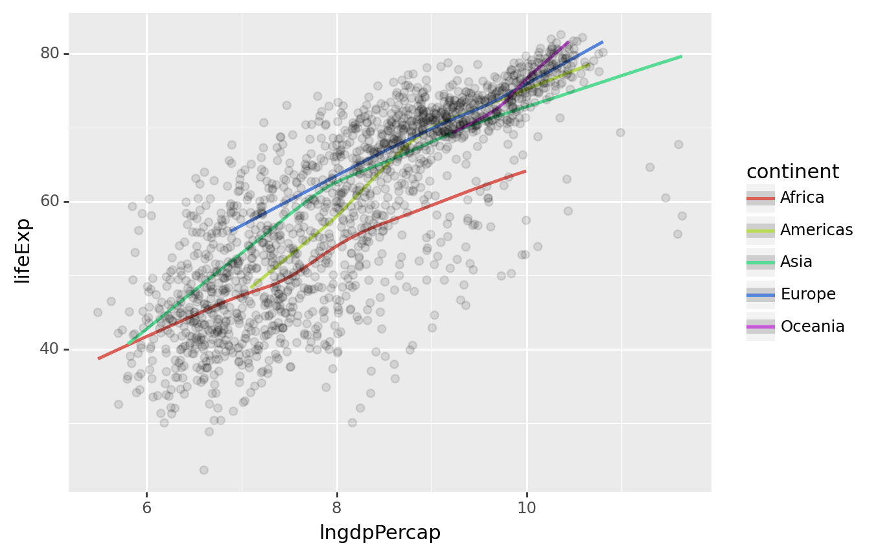
Putting it all together
# step 1: data
(ggplot(data=gapminder) +
# step 2: geom
geom_point(
aes(x="lngdpPercap", y="lifeExp", color="continent"),
alpha=.2, size=3) +
# step scale: manually edit the aesthetic's values
scale_color_manual(values = ["blue","steelblue","black","gold","pink"],
name="Continent") +
# step theme: change the overall look of the graph
theme_minimal(base_size=16) +
# step facet: break the graph into subplots
facet_wrap("continent", scales="free") +
# step labels: edit the labels of the graph
labs(x="Log GDP Per Capita", y="Life Expectancy",
title="Gdp vs Life Expectancy Across the World")
)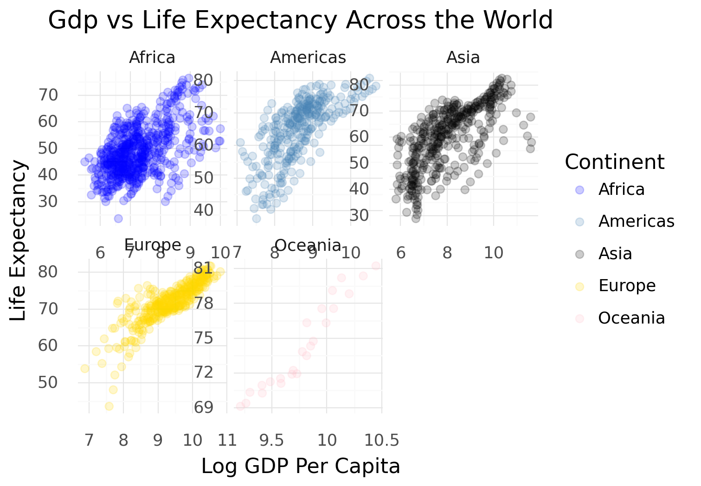
Do I need to memorize all of these options?
No. Learn the fundamental steps and how they fit together. When you need to build a graph:
- Consult the plotnine documentation for guidance and tips on the API
- Browse the gallery for graphs you’d like to replicate
- Get ready to ask Google the same question over and over
Native Python libraries: matplotlib + seaborn
Why cover these too?
- Outside
plotnine, Python has its own native visualization tools - The most common are
matplotlibandseaborn(built on top ofmatplotlib) - You’ll frequently encounter them in other data scientists’ code, so we’ll cover them briefly
We’ll use the same gapminder data throughout
matplotlib
matplotlib builds plots in a few explicit steps:
- Step 1: create the
plt.figure()andplt.axes()objects - Step 2: create the visualization with a specific method on the
axesobject - Step 3: edit aesthetics with arguments inside those methods
- Step 4: edit labels, titles, and overall annotations
import matplotlib.pyplot as plt # for plotting
import seaborn as sns # for plotting
gapminder.head()| country | continent | year | lifeExp | pop | gdpPercap | lngdpPercap | lnpop | |
|---|---|---|---|---|---|---|---|---|
| 0 | Afghanistan | Asia | 1952 | 28.801 | 8425333 | 779.445314 | 6.658583 | 15.946754 |
| 1 | Afghanistan | Asia | 1957 | 30.332 | 9240934 | 820.853030 | 6.710344 | 16.039154 |
| 2 | Afghanistan | Asia | 1962 | 31.997 | 10267083 | 853.100710 | 6.748878 | 16.144454 |
| 3 | Afghanistan | Asia | 1967 | 34.020 | 11537966 | 836.197138 | 6.728864 | 16.261154 |
| 4 | Afghanistan | Asia | 1972 | 36.088 | 13079460 | 739.981106 | 6.606625 | 16.386554 |
matplotlib example
# step 1: can be done with plt.subplots()
fig, ax = plt.subplots()
# step 2 + step 3
ax.scatter(x = gapminder["lngdpPercap"], y = gapminder["lifeExp"],
c="green", alpha=.5, marker="*")
# step 4
ax.set_xlabel("Log GDP Percapita")
ax.set_ylabel("Life Expectancy")
plt.show()Text(0.5, 0, 'Log GDP Percapita')Text(0, 0.5, 'Life Expectancy')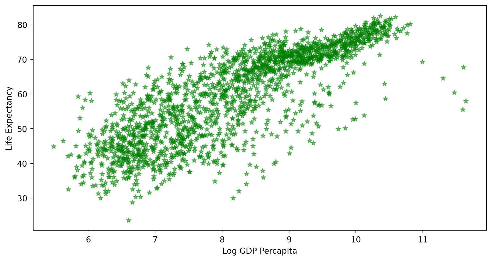
.plt makes some of these steps unnecessary
# using .plt methods to avoid separate .axes and .figure calls
plt.figure(figsize=(8,4))
plt.scatter(x = gapminder["lngdpPercap"], y = gapminder["lifeExp"],
c="green", alpha=.5, marker="*")
plt.xlabel("Log GDP perCapita")
plt.ylabel("Life Expectancy")
plt.show()Text(0.5, 0, 'Log GDP perCapita')Text(0, 0.5, 'Life Expectancy')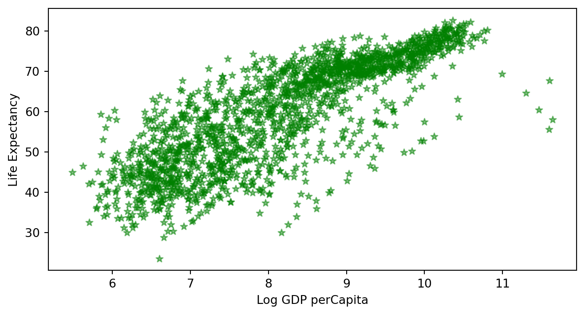
seaborn
A higher-level, more attractive interface built on top of matplotlib
Advantages:
- Graphs are visually more polished than base
matplotlib - Built-in themes
- Integrates seamlessly with pandas DataFrames
See the seaborn tutorial
seaborn example
sns.scatterplot(x = "lngdpPercap", y="lifeExp",
alpha=.5,
color="green",
s=100,
data = gapminder)
plt.xlabel("Log GDP perCapita")
plt.ylabel("Life Expectancy")
plt.show()Text(0.5, 0, 'Log GDP perCapita')Text(0, 0.5, 'Life Expectancy')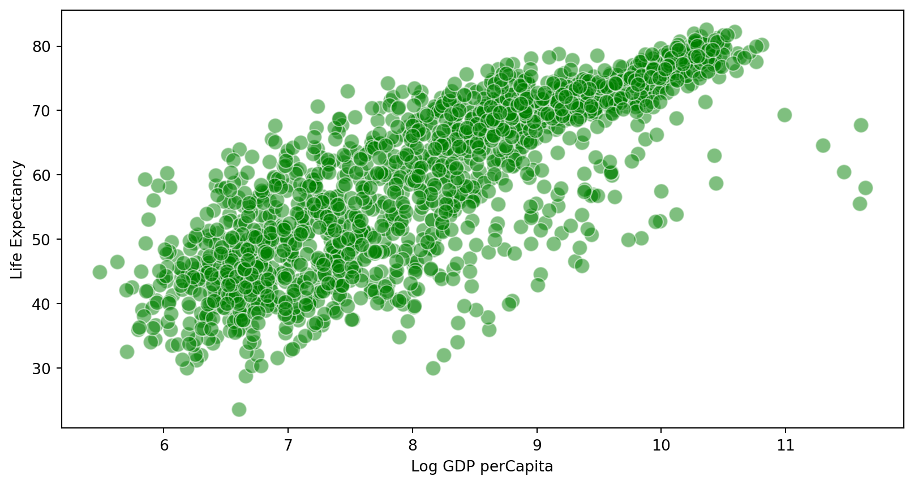
Notice: the data comes in as an argument, and variables are referenced as strings — otherwise very similar to matplotlib
Data types and a directory of visualizations
Data types drive visualization decisions
| Data Type | Example | Scale |
|---|---|---|
| Numerical | 1.3, 800, 10e3 | Continuous |
| Integer | 1, 2, 3 | Discrete (small \(n\)), Continuous (large \(n\)) |
| Categorical | “dog”, “Nigeria”, “A” | Discrete |
| Ordered | “Small”, “Medium”, “Large” | Discrete |
| Dates/Time | 2009-01-02, 5:32:33 | Continuous |
Discrete values


Continuous values

Relationships


Discrete values in practice
Univariate discrete categorical data: bar plots
Adding in more categorical data
# create a binary indicator for wealthy countries
gapminder = (gapminder.
assign(wealthy=np.where(gapminder["lngdpPercap"] > 9,"yes","no")
)
)
(ggplot(gapminder,aes(x='continent',fill='wealthy')) +
geom_bar() +
scale_x_discrete(limits=["Africa", "Americas", "Asia", "Europe", "Oceania"]) +
ylab("Number of observations"))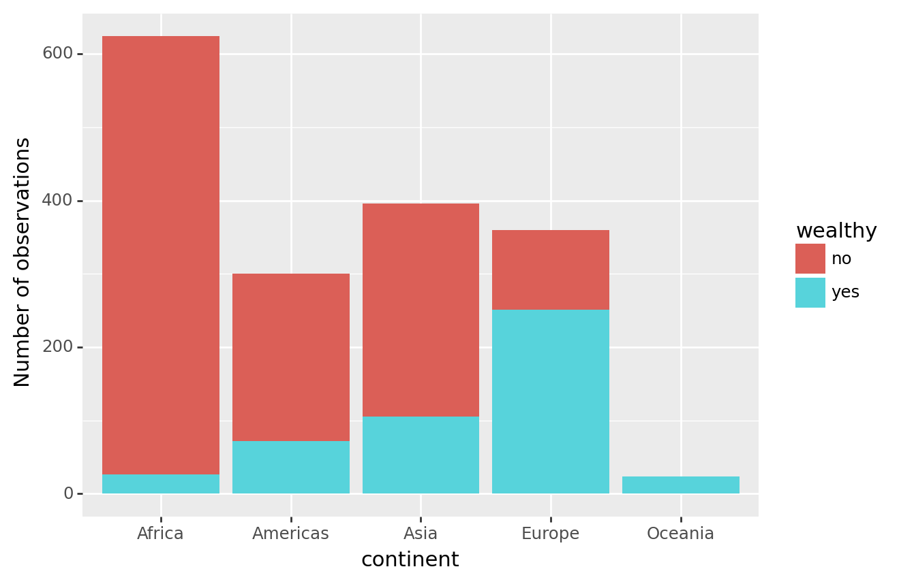
Dodge the bars + edit colors manually
(ggplot(gapminder,aes(x='continent',fill='wealthy')) +
geom_bar(position="dodge", color="black") +
scale_x_discrete(limits=["Africa", "Americas", "Asia", "Europe", "Oceania"]) +
scale_fill_manual(values=["yellow", "red"],
limits=["yes", "no"],
labels=["Yes", "No"],
name="Wealthy?") +
ylab("Number of observations")
)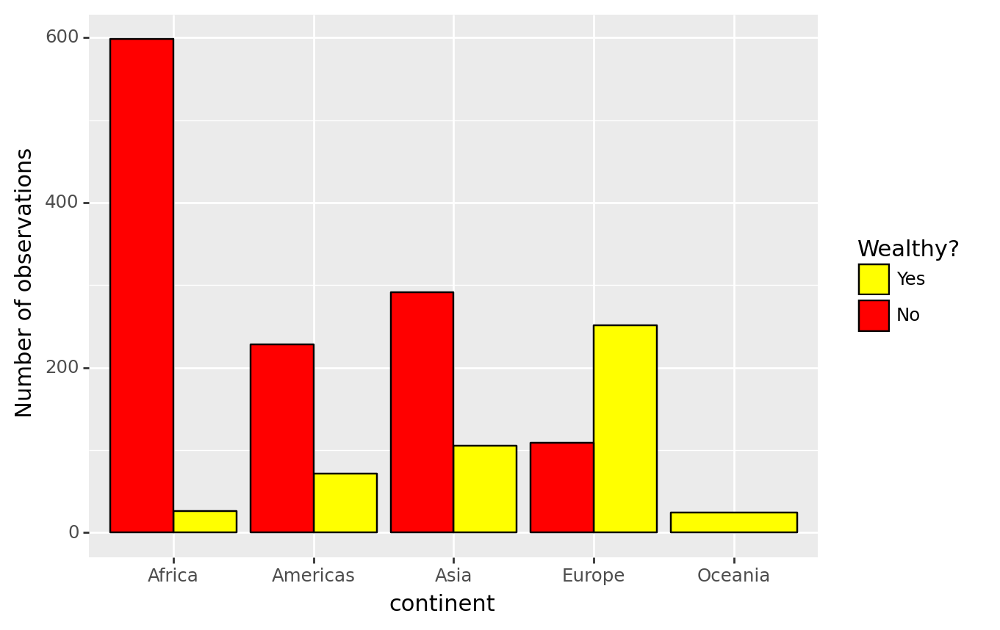
The same bar plot, in seaborn
In-class Activity
See Activity 1, 2, and 3 in notebook
Appendix with Additional Plot Types
Point + uncertainty, in plotnine
# calculate the means and standard errors for lifeExp grouped by continent
grouped = gapminder.groupby('continent')['lifeExp'].agg(['mean', 'std']).reset_index()
grouped['ymin'] = grouped['mean'] - grouped['std']
grouped['ymax'] = grouped['mean'] + grouped['std']
(ggplot(grouped, aes(x='continent', y='mean'))
+ geom_point(color="red", size=3)
+ geom_errorbar(aes( ymin='ymin', ymax='ymax'), width=.2, size=1.2)
)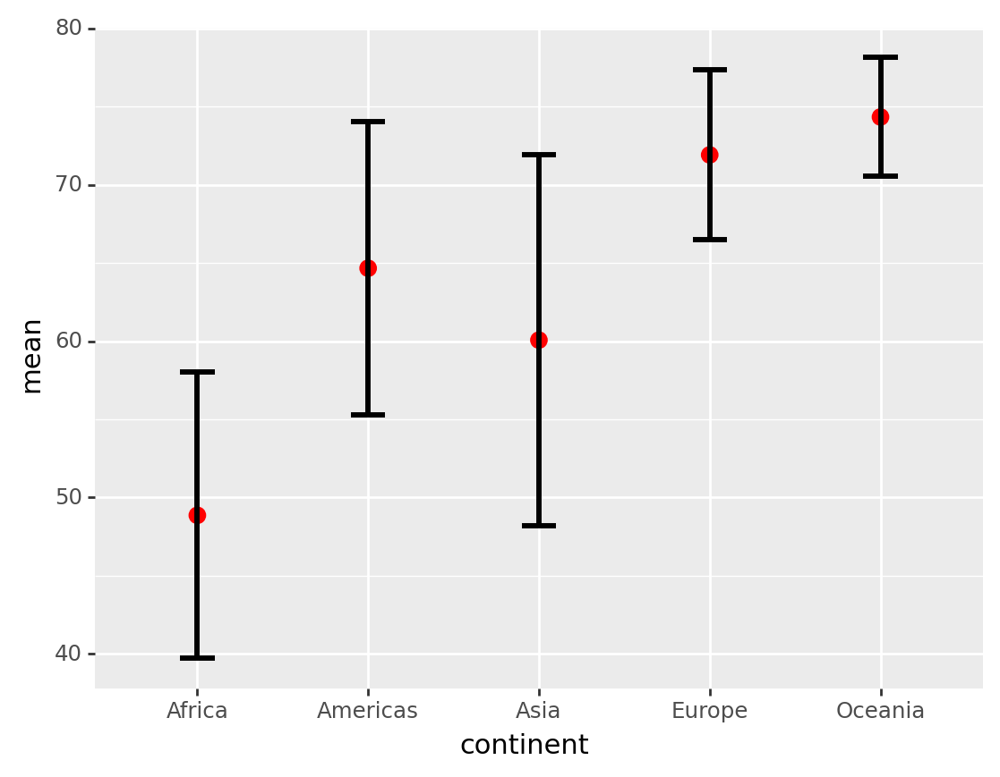
Point + uncertainty, in seaborn
Bivariate: category on continuous
Box plot
Box plot
Violin plot
Violin plot
Jitter plot
Layering representations: jitter + box plot
Layering representations: jitter + box plot
# seaborn
color = {"Asia": "blue",
"Europe": "red",
"Africa": "yellow",
"Americas":"green",
"Oceania":"gray"}
# boxplot
sns.boxplot(x='continent',y = 'lifeExp',
hue="continent",
palette=color,
data=gapminder)
# jitter
sns.stripplot(x='continent', y='lifeExp',
data=gapminder, jitter=True,
alpha=0.1, hue="continent",
palette=color)
plt.legend([], [], frameon=False)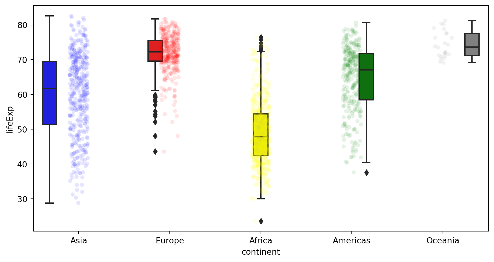
Continuous values in practice
Histogram
Histogram
Density
Density, faceted by group
Density, faceted by group
Relationships in practice
Scatterplot
Scatterplot
Line plot
Line plot
Easily add a smoother in plotnine
(ggplot(gapminder, aes(x = 'lngdpPercap', y = 'lifeExp')) +
geom_point(alpha=.2)
+ geom_smooth(method="lowess"))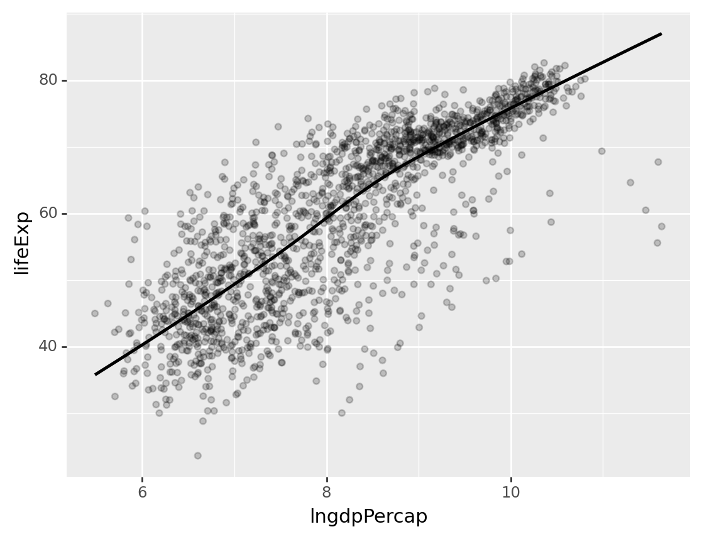
Data science I: Foundations